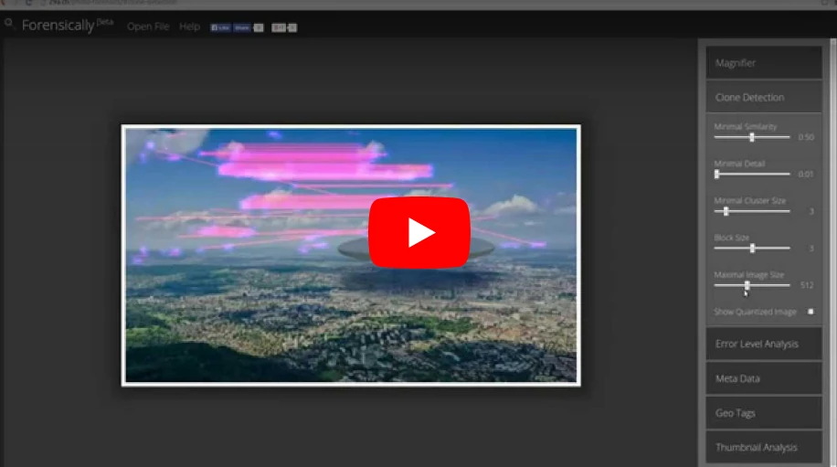

About Forensically
Forensically is a set of free tools for digital image forensics. It includes clone detection, error level analysis, meta data extraction and more. It is made by Jonas Wagner. You can read a bit more about it in this blog post.
You should think of forensically as a kind of magnifying glass. It helps you to see details that would otherwise be hidden. Just like a magnifying glass it can't tell true from false or good from evil, but it might just help you to uncover the truth.
Also absence of evidence is still not evidence of absence and Extraordinary claims require extraordinary evidence.
Tutorial Video
The Tools
Magnifier
The magnifier allows you to see small hidden details in an image. It does this by magnifying the size of the pixels and the contrast within the window.
MagnificationAlso known as the zoom factor.
EnhancementThere are three different enhancements available at the moment. Histogram Equalization, Auto Contrast and Auto Contrast by Channel. Auto Contrast mostly keeps the colors intact, the others can cause color shifts. Histogram Equalization is the most robost option. You can also set this to none.
Clone Detection
The clone detector highlights similar regions within an image. These can be a good indicator that a picture has been manipulated using the clone tool. Note that this tool is a first attempt and not yet very refined.
Regions that are similar are marked in blue and connected with a red line. If a lot of regions overlap the result can look white.
Minimal SimilarityDetermines how similar the cloned pixels need to be to the original.
Minimal DetailBlocks with less detail than this are not considered when searching for clones.
Minimal Cluster SizeDetermines how many clones of a similar region need to be found in order for them to show up as results.
Blocksize (2n)Determines how big the blocks used for the clone detection are. You generally don't want to touch this.
Maximal Image SizeThe maximal width or height of the image used to perform the clone search. Bigger images take longer to analyze.
Show Quantized ImageShows the image after it has been compressed. Can be useful to tweak Minimal Similarity and Minimal Detail. Blocks that have been rejected because they do not have enough detail show up as black.
Error Level Analysis
This tool compares the original image to a recompressed version. This can make manipulated regions stand out in various ways. For example they can be darker or brighter than similar regions which have not been manipulated.
There is a good tutorial on ELA on fotoforensics.com.
The results of this tool can be misleading, watch the video and read the tutoria for details.
JPEG QualityThis should match the original quality of the image that has been photoshopped.
Error ScaleMakes the differences between the original and the recompressed image bigger
Magnifier EnhancementThere are three different enhancements available at the moment. Histogram Equalization, Auto Contrast and Auto Contrast by Channel. Auto Contrast mostly keeps the colors intact, the others can cause color shifts. Histogram Equalization is the most robost option. You can also set this to none.
OpacityThe opacity of the differences layer. If you lower it you will see more of the original image.
Noise Analysis
This is tool is basically a reverse denoising algorithm. Rather than removing the noise it removes the rest of the image. It is using a super simple separable median filter to isolate the noise. It can be useful for identifying manipulations to the image like airbrushing, deformations, warping and perspective corrected cloning. It works best on high quality images. Smaller images tend to contain to little information for this to work. You can read more about noise analysis in my blog post Noise Analysis for Image Forensics.
Noise AmplitudeMakes the noise brighter.
Equalize HistogramApplies histogram equalization to the noise. This can reveal things but it can also hide them. You should try both histogram equalization and scale to analyze to noise.
Magnifier EnhancementThere are three different enhancements available at the moment. Histogram Equalization, Auto Contrast and Auto Contrast by Channel. Auto Contrast mostly keeps the colors intact, the others can cause color shifts. Histogram Equalization is the most robost option. You can also set this to none.
OpacityThe opacity of the noise layer. If you lower it you will see more of the original image.
Level Sweep
This tool allows you to quicky sweep through the histogram of an image. It magnifies the contrast of certain brightness levels. On use of this tool is to make edges that were introduced when copy pasting content more visible.
To use this tool simple move your mouse over the image and scroll with your mouse wheel. Look for interesting discontinuities in the image.
A position of 0.5 and a width of 32 would mean that 127-32/2 would be the equal to 0 in the output. 127+32/2 would be equal to 256.
SweepThe position in the histogram to be inspected. You can quickly change this parameter by using the mouse wheel while hovering over the image, this allows you to sweep through the histogram.
WidthThe amount of values (or width of the slice of the histogram) to be inspected. You the default should be fine.
OpacityThe opacity of the sweep layer. If you lower it you will see more of the original image.
Luminance Gradient
The luminance gradient tool analyses the changes in brightness along the x and y axis of the image. It's obvious use is to look at how different parts of the image are illuminated in order to find anomalies. Parts of the image which are at a similar angle (to the light source) and under similar illumination should have a similar color; Another use is to check edges. Similar edges should have similar gradients. If the gradients at one edge are significantly sharpe than the rest it's a sign that the image could have been copy pasted. It does also reveal noise and compression artifacts quite well.
PCA
This tool performs principal component analysis on the image. This provides a different angle to view the image data which makes discovering certain manipulations & details easier. This tool is currently single threaded and quite slow when running on big images.
I have provided an example of how this tool can be used in my short article Principal Component Analysis for Photo Forensics.
InputThe data to run the PCA on.
Mode
- Projection: projection of the value in the image onto the principal component.
- Difference: Difference between the input and the closest point on the selected principal component.
- Distance: Distance between the input and the closest point on the selected principal component.
- Component: The closest point on the selected principal component.
ComponentThe component of the PCA you want to inspect. The first component contains the most variance. The later components can reveal more hidden details.
LinearizeEnables operation in linear space rather than in gamma space. Slower.
InvertInverts the output data.
EnhancementThere are three different enhancements available at the moment. Histogram Equalization, Auto Contrast and Auto Contrast by Channel. Auto Contrast mostly keeps the colors intact, the others can cause color shifts. Histogram Equalization is the most robost option. You can also set this to none.
OpacityThe opacity of the sweep layer. If you lower it you will see more of the original image.
Meta Data
This tool displays the hidden exif meta data in the image, if there is any.
Geo Tags
This tool shows the GPS location where the image was taken, if it is stored in the image.
Thumbnail Analysis
This tool shows the hidden preview image inside of the original image if there is one. The preview can reveal details of the original image or the camera it was taken with.
Opacity
Show Differences
JPEG Analysis
This tool extracts meta data out of JPEG Files. You can learn more about it in my post JPEG Forensics in Forensically.
Comments
Some applications store interesting data in the comments of a JPEG file.
Quantization Tables
The quantization matrices used to compress a JPEG file reveals information about what software was last used to save the file in question.
Forensically currently recognizes three types of quantization matrices:
- Standard JPEG
- Adobe (latest CC should be complete, the rest is still incomplete)
- Non Standard
I’m missing a complete set of sample images for older photoshop versions using the 0-12 quality scale. If you happen to have one and would be willing to share it please let me know.
Most software and internet services save their files using the quantization matrices defined by the standard. The exception to this rule are Adobe products, which use their own custom quantization tables. Jpegs produces by digital cameras often use non standard color matrices.
So if you know that the camera that an image was supposedly taken with uses one type of quantization matrix and the image you are trying to verify uses a different type of quantization matrix this can be a good indicator that the file has been edited or at least resaved.
From what I have seen iPhones use non standard quantization tables with qualities around 92. Android phones tend to use the standard quantization matrices, but there are exceptions to this.
For more information about this technique please look at the presentation Using JPEG Quantization Tables to Identify Imagery Processed by Software by Jesse Kornblum.
Structure
The sequence of markers in a JPEG file. In general JPEG images taken with a camera with the same settings should result in the same sequence.
String Extraction
This tool scans for binary contents of the image looking for sequences of ascii characters. It is a great fallback to view meta data that is in an image in a format that Forensically does not understand yet. It will output sequences of alpha numeric characters longer than 4, or sequences of 8 or more non control ascii characters. This allows you to discover meta data that is hidden or not recognized by forensically. The relevant data is genreally stored at the beginning or end of the file.
An interesting string to look for is bFBMD followed by a sequence of numbers and letters a-f (hex encoding). This string is added to (some) images by facebook.
It is inspired by the classic unix strings command.
You can find some more information about how to use this tool in my post JPEG Forensics in Forensically.
FAQ
Are my images uploaded to your server?
No! I respect your privacy. All of your images stay on your computer. They are never uploaded to any cloud or server.
Can I open RAW images using this app?
No, RAW images are not supported. The highest quality format you can use is 24-bit PNG.
Can I use this app offline?
Yes you can if you are using a modern web browser like firefox or chrome.
Offline mode is not working with your current setup.
What other similar software can you recommend?
Ghiro looks pretty cool and is open source. You can try it online on imageforensic.org.
Changelog
2024-04-12
Added C2PA tool for displaying C2PA JUMBF content authenticity meta data.
2025-03-29
Modernized some of the dependencies and improved performance.
2017-06-14
Fixed a typo in the JPEG module which recognized progressive JPEGs as lossless. Updated help page.
2017-02-05
Added JPEG Analysis and String Extraction tools. See JPEG Forensics in Forensically.
2016-07-14
Added PCA tool.
2016-07-02
Added luminance gradient tool. Tweaked clone detection default settings.
2016-06-30
Added offline support for modern browsers via service workers.
2015-08-21
Added noise analysis tool.
2015-08-20
Added a new enhancement option to the magnifier (histogram equalization). Added magnifier to Error Level Analysis.
2015-08-16
Initial Public release
Credits
Clone Detection
The clone detection tool was inspired by the paper Detection of Copy-Move Forgery in Digital Images by Jessica Fridrich, David Soukal, and Jan Lukáš. But the actual algorithm used is my own.
Error Level Analysis
I got the concept out of the presentation A Picture's Worth... Digital Image Analysis and Forensics by Neal Krawetz
Luminance gradient
This is another tecnique inspired by Neal Krawetz
Open Source Libraries
This software was built using the following open source components. I want to thank all of their authors for making my life easier, and projects like this possible. You can find their respective licenses on the pages linked below.